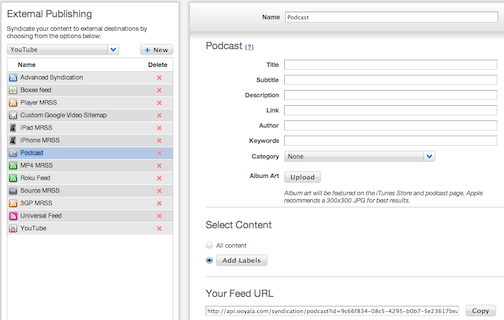

The following table describes the list of content types that can or cannot be added in the feed:
| Content Type |
Can Be Added in Feed? |
| Video |
Yes |
| Video Ad |
Yes |
| Channel (Deprecated) |
Yes |
| MultiChannel (Channel Set) - Deprecated |
No |
| LiveStream (Deprecated) |
No |
| Youtube |
No |
| Remote Asset |
No |
| Audio |
No |
| LiveAudio (Deprecated) |
No |
To create a Podcast syndication:

-
Log in to the Backlot UI.
The Backlot UI opens.
-
Open the PUBLISH page.
-
Click the External Publishing subtab.
-
From the list box on the left, select publishing type Podcast and click New.
A new syndication is created.
-
If desired, change the name of the syndication.
The syndication's name is shown in Backlot.
-
Give a Title for your podcast.
The title is shown externally with the podcast to the end user.
-
Enter your desired Subtitle to the
podcast.
-
Change the description of the syndication to your satisfaction.
-
Enter the Link to your podcast where
indicated.
-
Select the Language for the podcast. Per Apple requirements, you must
specify a language for this podcast feed.
-
Enter the podcast's Author in the proper
field.
-
In the Keywords field, enter a list of comma-separated keywords that apply to your podcast.
-
Select the Category which best applies to
your podcast from the list box.
-
Select whether the podcast contains Explicit language (Yes) or not
(No). Per Apple requirements, you must specify an option for this podcast
feed.
-
For Album Art, click Upload and browse your computer to select an image to upload.
-
To specify which content is syndicated, if this
syndication is for all your content, click All content.
Otherwise, click Add Labels and select one or more labels.
Changes take effect immediately, and the syndication is created. The feed can be accessed at the URL shown in Your Feed URL.